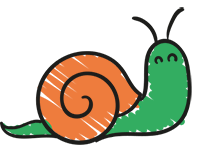
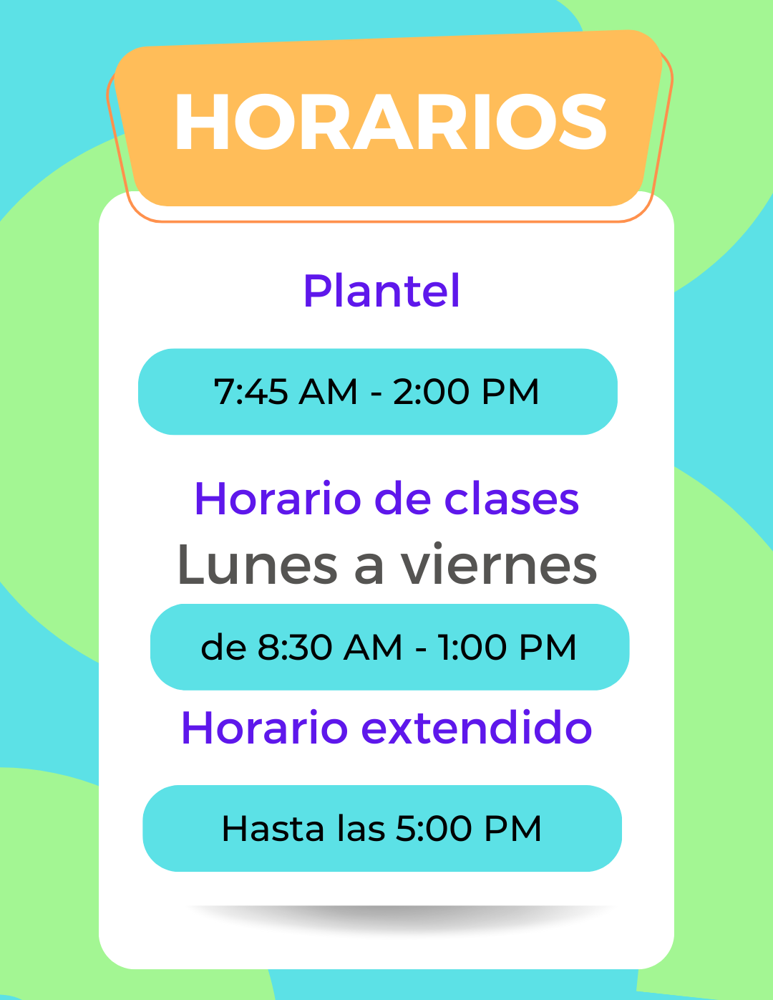

En esta etapa nos enfocamos en el desarrollo del potencial de cada niño a través de actividades que le permitirán desarrollar su lenguaje, psicomotricidad y afectividad; reforzando de manera positiva los hábitos en educación y salud.
Fomentamos su autonomía por medio del juego, centrándonos en el desarrollo de su motricidad gruesa; guiándonos a través de sus primeros pasos y necesidades, desarrollando positivamente su personalidad y orientándolos en la toma de sus propias decisiones. En esta etapa las pequeñas y los pequeños serán invitados a vivir múltiples aventuras que favorecerán su lenguaje e imaginación mediante diversas actividades lúdico-educativas, de expresión corporal, psicomotricidad y de desarrollo perceptual. Además de vivir la iniciación al control de esfínteres.



